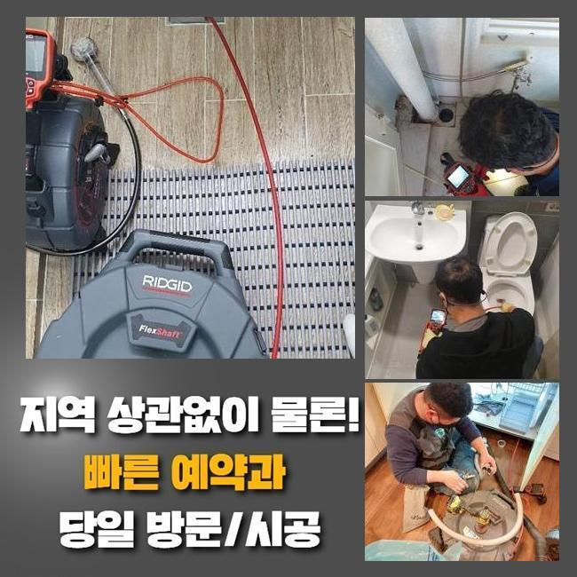
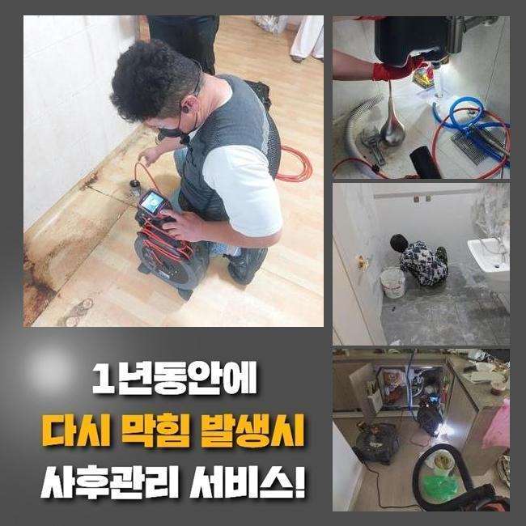
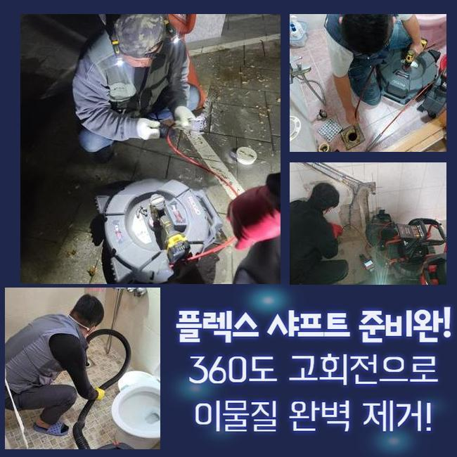
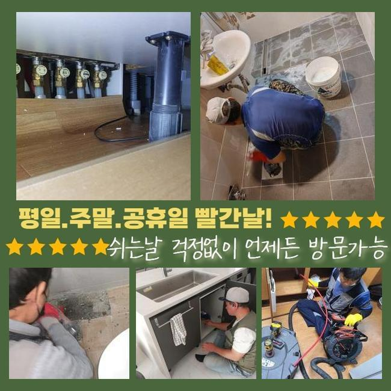
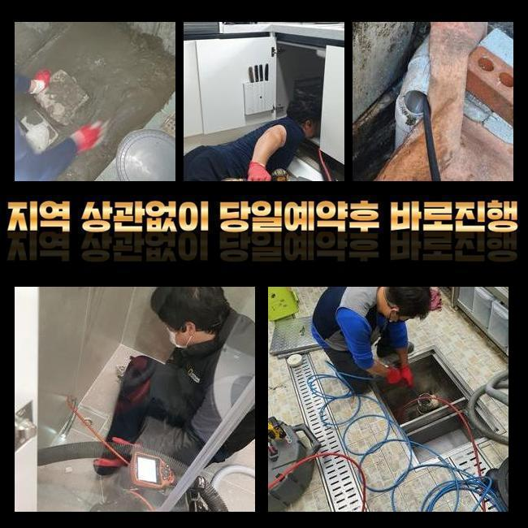

🏠 성북구 정릉동세탁기배수구막힘 안암동 악취차단 누수
서울 성북구 싱크대막힘 전문 시공 후기

📋 작업 개요
- 위치: 서울 성북구, 성북구, 서울
- 서비스 유형: 싱크대막힘, 하수구막힘, 배관막힘, 맨홀막힘, 누수수리, 역류해결, 뚫는업체, 배관청소, 고압세척, 악취차단
- 작업 일시: 2025. 2. 26. 22:20
- 업체명: 하수구수사대 (010-5615-2118)
🔍 문제 상황
성북구 종암동욕실역류 안암동 하수구청소장비 배관막힘누수업체
일상생활을 하다가 배관막힘이 발현되는경우 다양한 불편함들이 생기게됩니다
그전에 관리해주는게 올바른방법인데 이러한조치를 취하시지않고 계시는데요
최근에출동한 현장으로 막힘이 발생했을때 전문가가 필수적인 이유가뭔지 알려드려볼게요
이번장소는 주택이었는데 배관역류로인해 불편해졌다고 의뢰하셔서 방문드렸어요
고객분이 거주를하신지 오랜기간이 흐르지 않았는데도 막히게된것인지 이유를 알고싶어하셨어요
상세히 설명드리기위해 막힌원인부터 파악하기로했어요
주택뒤쪽에 보일러실쪽으로 이동하게되었어요
거주지를옮긴지 얼마안되서 하수구문제가 발현되면 곤란할수밖에 없습니다
배관내시경을 통하여 막힌이유가 도대체 무엇인지 알아보았죠

🔎 원인 분석
💡 전문가 진단: 정밀 진단 장비를 사용하여 슬러지의 고착 여부를 판명하고 타격/세척 작업을 실시했습니다.
물넘침으로 하수구내부가 보이지않다보니 석션기로 물을흡입후 내시경기를 집어넣어 체크해주었죠
보일러실 문 앞 외부에 물기가 맺혀서 올라와 있었네요
체크해본결과 주택마당쪽에 하수관이 연결되어있다는걸 파악했습니다
현장에계시는 고객님께 현재상황을 안내드린후 어떤방법으로 처리해낼지 방식에대하여도 안내를드리고 시작한답니다
배관시스템이 무너지면 물이넘치게되는 문제로 연결되는데요
이상황보다 좀더 심각해지면 물이새면서 주변에사는 주민들에게도 피해를입혀요
주택이라도 한다면 다룬이웃에게 피해는없겠지만 하수구구조가 복잡히 연결되어있기에 빈번히 검사해야합니다
조치를취하지 않으신다면 오늘장소처럼 이런현상이 일어나게되고 당황하실겁니다
마당쪽에있었던 외부맨홀을 발견했는데요
외부에 위치하는 하수구를통해 오랜기간 쌓이고쌓인 이물을 소거시키고 막힘을 해결해냅니다

🔧 작업 과정
맨홀뚜껑을 열어봤더니 대량의 오수들이 흘러나와 마당주변이 오염이되었지만 외부쪽에 위치하고있는 하수구여서 천만다행이라고 할수있었죠
하수구카메라로 점검해서 어떤이유로 막힘이 발생하였는지 파악해주는데요
하수구내부에 잔해물들이 가득찬걸 볼수있었고 여기먼저 고압세척기를 통하여 이물제거를 시작했어요
고압세척기는 강력한압을 자랑하기때문에 주로쓰는 방법이라고 할수있지만 잘못쓰면 오래사용한 하수구의경우 크랙이 생길수있기때문에 수압력을 조절해가며 뚫어줘야해요
많은잔해물이 제거될수있게끔 계속해서 세척했어요
고압세척중에 내시경을통하여 어떤상태인지 체크해가면서 잔여물없이 해결해드린답니다
각종잔해물질을 소거하며 작업과정을 끝낼수있었는데 의뢰자분이 싱크대하수구까지 점검을원하셨기에 검사해주었어요
싱크대안속에 이러한 오염물질들이 가득차있기 어렵지만 싱크대를 이용하시는동안에 무슨방법으로 사용하셨는지 여쭈었더니 기름기제거없이 하수구에그대로 부었다고 하셨는데요
카메라기기로 살펴봤더니 기름오염물이 쌓인걸 살필수있었어요
이곳은 고압세척보단 샤프트기라고하는 기계가 좋아보였기에 플렉스샤프트로 막힘을 뚫어냈어요
의뢰주신분께 하수구를 간헐적인 배관관리를 진행해보실것을 권유했어요
저희들의경우 막힘현상에 대하여 작업이요구될때 의뢰를주신다면 이유를 원인에대해 밝혀내고나서 처리해드릴게요!
하수도가 막혔을시 알아서 해결되겠거니하며 생각을하시지만 이런대처로는 해결할수없어요
일시적인 처리될때도있지만 대다수의경우 물이넘치거나 누수문제로 이어지면서 피해를 크게볼수도있죠
뒤늦게해결하면 일이심각해지고 시간또한 오래걸리다보니 문제를 발견하게 되었을때 대처하는것이 간편하고 확실히 처리해주는 방법이죠
하수구문제에 있어서는 전문업체에게 맡겨야 성공적인 결과물을 만나볼수있어요


✅ 작업 완료
살아가는동안 갑자기 막혀버렸다면 조속하고 안전히 뚫어줄업체를 호출해서 해결해보시길 바라고 어떤곳에다 의뢰하실지 고민하고계시면 첨부한 번호를통해 연락주신다면 상담을통하여 자세하게 알려드릴게요!
어떤곳이라도 1시간내로 내방이 가능할뿐아니라 투명히 작업과정을 공개하니 염려하지않으셔도 되겠습니다
무리해서 해결하려는것과 방임하는건 안내드렸던 2차적인 피해들로 이어질수가있으니 삼가하시는게 좋으며 발견즉시 조치바래요
하수구가 막혀버렸다면 저희와함께 해결해보는건 어떨까요 확실한결과로 보여드리도록 할게요




⚠️ 베란다 누수 및 방수 관리 방법
- ✅ 비가 많이 올 때 창틀 주변이나 아래층 천장에 얼룩이 생기는지 정기적으로 확인해 보세요.
- ✅ 우수관 주변 실리콘 마감이 들뜨거나 깨진 틈새가 있는지 손상 여부를 수시로 체크하세요.
- ✅ 베란다 바닥 타일의 줄눈(메지)이 소실되면 그 틈으로 물이 침투하여 누수가 유발됩니다.
- ✅ 누수 의심 증상 발견 시 방치하면 아래층 손실이 커지므로 즉시 전문가의 진단을 받으십시오.
💡 핵심 정리
- 확실한 장비 작업(내시경 점검 및 샤프트 스케일링)으로 원인을 뿌리 뽑습니다.
- 작업 후 1년 이내에 동일한 부위 재발 시 100% 무상 A/S 서비스를 보장합니다.
- 서울 · 경기 · 인천 전 지역에 24시간 언제든 긴급 출동할 수 있도록 항시 대기 중입니다.
❓ 자주 묻는 질문 (FAQ)
🚨 서울 성북구 싱크대막힘 문제로 고민이신가요?
정확한 원인 진단과 확실한 시공으로 재발 없는 해결을 약속드립니다.
24시간 긴급 출동 | 서울 · 경기 · 인천 전지역 | 1년 내 재발 시 무상 A/S